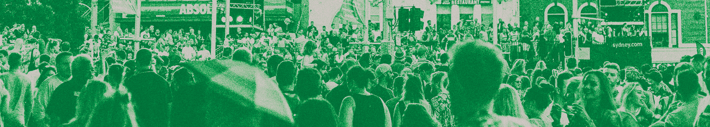
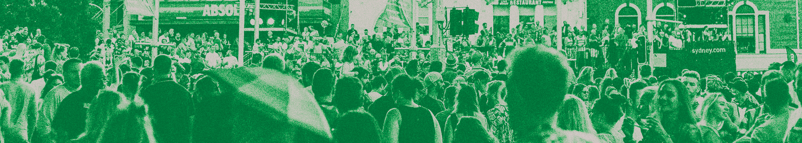
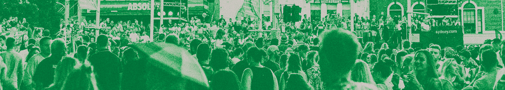

Home
Legal
Healthcare
Employment & Housing
Behavioral Health
Youth
Advocacy
Nightlife
Arts, Music, & Theater
Athletics
Spiritual & Faith
Misc

Advocacy, Activism & Organizing
Massachusetts Commission on LGBTQ+ Youth
Massachusetts Transgender Political Coalition (MTPC)
Massachusetts Gender and Sexuality Alliance (GSA)
Leadership Council
Youth on Board
Zumix
The Queer Neighborhood Council
Gay for Good
Queer & Trans Mutual Aid Massachusetts
Boston Trans & Queer Collective
 
